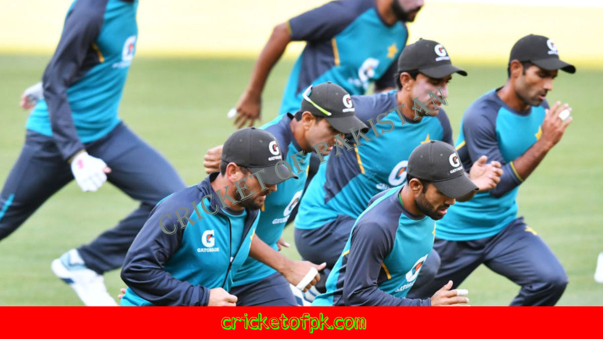

Cricket is a sport that is played with a ball and bat. It is a very important part of many people's lives, and fitness is a very important part of cricket. Fitness is essential for both batting and fielding. If you are not fit, you will not be able to play to your full potential. For batting, fitness is important for two reasons. The first reason is that if you are not fit, you will not be able to keep up with the pace of the game. The second reason is that if you are not fit, you will not be able to hit the ball as far as you would if you were fit. If you are not fit, you will not be able to score any runs. For fielding, fitness is important for two reasons. The first reason is that if you are not fit, you will not be able to catch the ball as easily. The second reason is that if you are not fit, you will not be able to run as fast as you would if you were fit. If you are not fit, you will not be able to stop the ball from going past you.
There is no doubt that fitness is important for both cricket and physical activity in general. Cricket is a physically demanding sport, and fitness is key to staying healthy and performing at your best. One of the biggest benefits of fitness for cricket is that it can help improve your speed and agility. This is especially important for batsmen, who need to be able to move quickly and accurately around the field. Fitness also helps you stay strong and flexible, which is important for fielding and batsmanship. There are a number of ways to get fit for cricket. You can work out at a gym, participate in a biking or running club, or take classes at a local cricket academy. Whichever way you choose, be sure to stick to a routine and make sure to stay motivated. With a little bit of effort, you can improve your fitness and performance as a cricket player.
Fitness is an important part of cricket and can have a lot of benefits. Fitness can help players have more power and speed, and can make them more agile. It can also help players stay injury free, and can improve their batting and bowling. Fitness is especially important for cricketers who are playing at a high level, as it can help them stay competitive.
Fitness Exercise
Cricket fitness exercise can help you to improve your physical condition and stamina. It can also help to improve your batting and bowling skills.
Cricket is a game that is enjoyed by people all around the world. It is a sport that can be played indoors or outdoors and can be played as a one-off event or can be a part of a longer-term fitness regime. Cricket fitness exercises can be done at home or at the gym and can be tailored to the individual's needs. There are a number of cricket fitness exercises that can be done to improve the player's overall fitness, including running, lunging, squatting, and jumping exercises.
Cricket is a sport that is known for its high energy and physical activity. Because of this, cricket fitness exercises can be used to help improve overall fitness. One such exercise is playing cricket as a fitness activity. Playing cricket can help improve cardiovascular fitness, muscular fitness, and balance. Additionally, cricket fitness exercises can help improve hand-eye coordination, mental focus, and agility.
Fitness

Faraz Ahmed Khan
Fitness
About Us
Cricket of Pakistan is a project of Express Media Group. This website provides its viewers with the latest news in the cricket world. Moreover, Cricket of Pakistan is the first cricket portal where you can read news in this site. The site primarily focuses on providing the latest news and information on Pakistani cricket, both at the international and snational level.


@copyright 2022 Cricket of pakistan